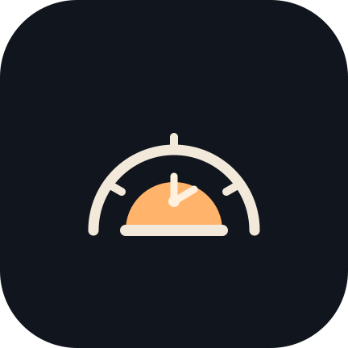
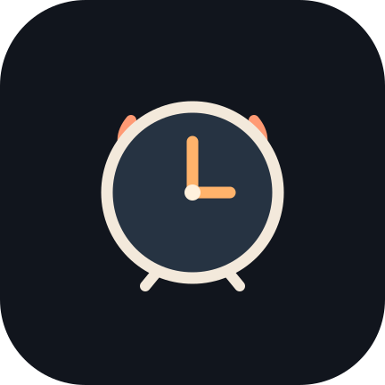
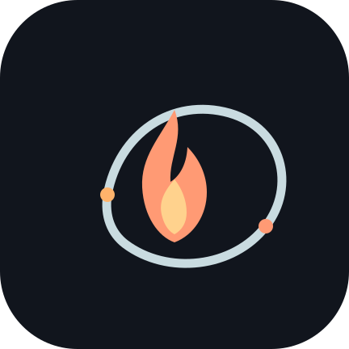

01 · 夜明けの時刻
時計の弧と昇る太陽をひとつの輪郭にまとめた案。起床の目的が伝わり、縮小しても判読しやすい構成です。
3案とも既存アイコンをなぞらず、暗いホーム画面でも形が残る単純な輪郭から設計しました。第1案をアプリに適用し、残る2案も比較用に残しています。

時計の弧と昇る太陽をひとつの輪郭にまとめた案。起床の目的が伝わり、縮小しても判読しやすい構成です。

均整の取れた文字盤に短いシグナルを添えた案。アラーム機能を直接的に表します。

成長システムの火種を軌道で包む案。文字盤に頼らず、習慣の積み重ねを象徴します。
選定した第1案はAndroidのアダプティブ前景とテーマ用単色レイヤーに展開しています。背景はランチャー側のマスクに任せます。